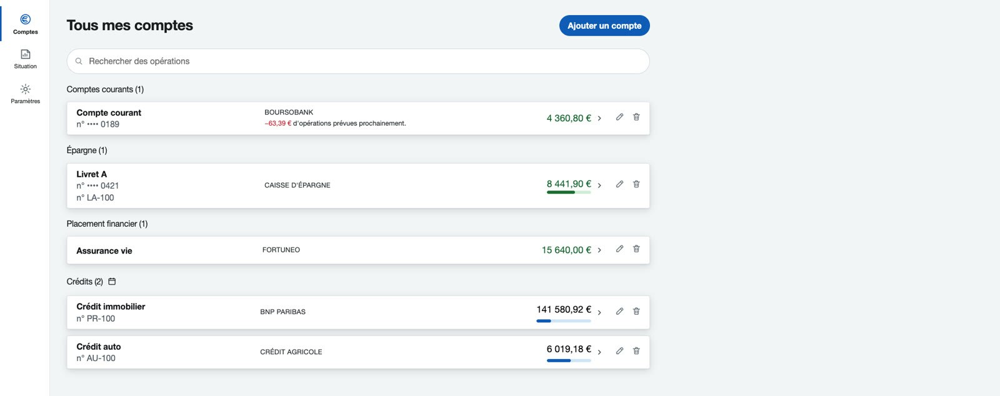
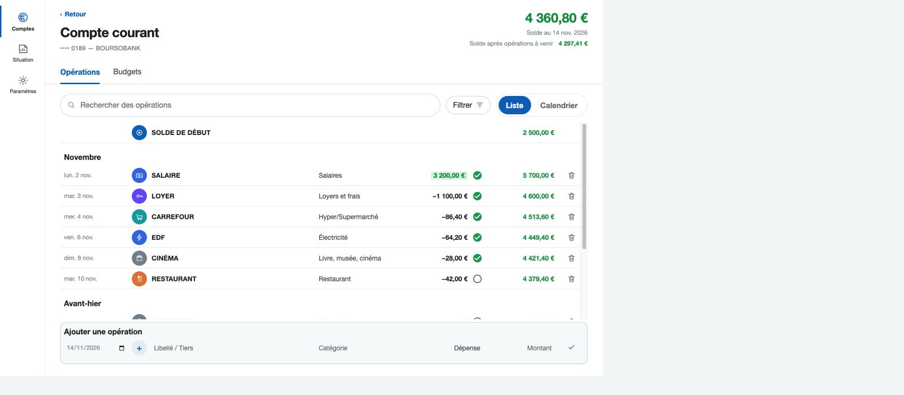
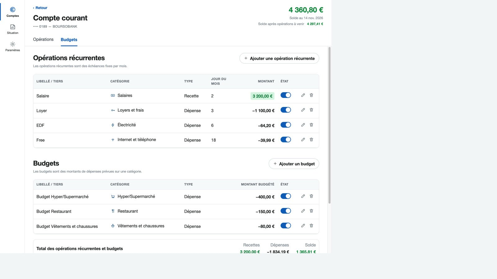
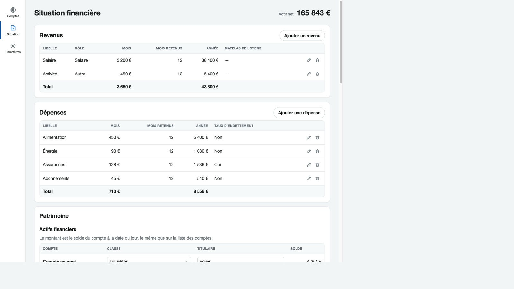
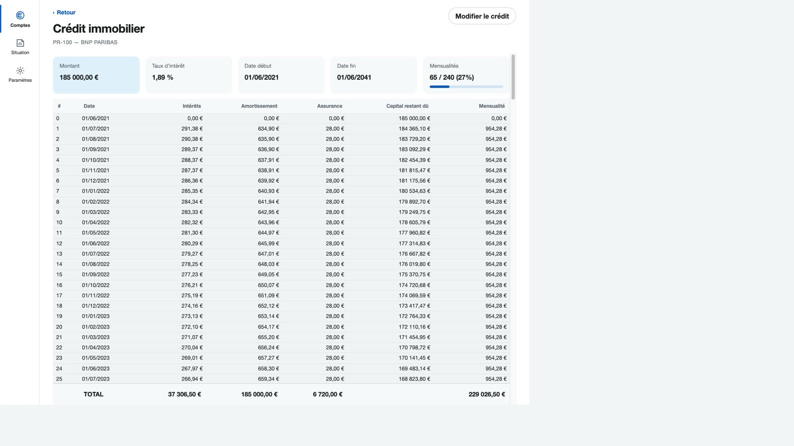
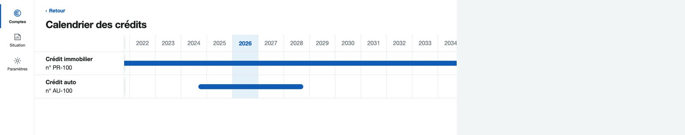
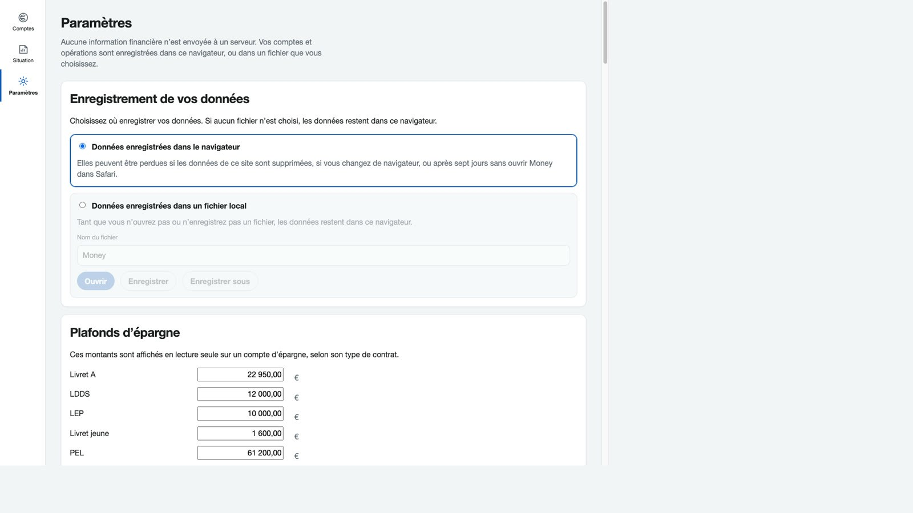
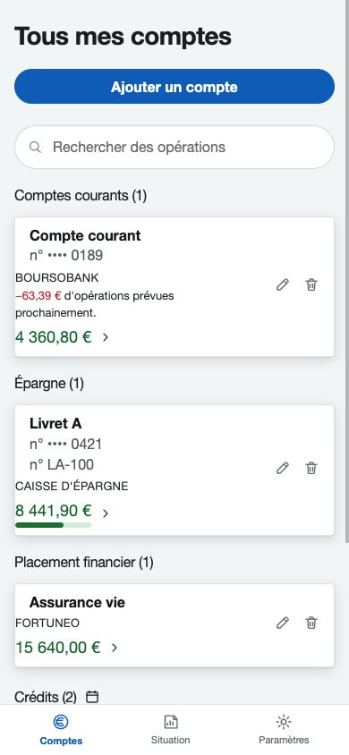

my-Money
Vos comptes, tenus simplement.
Money rassemble les comptes courants, l’épargne, les placements et les crédits. Vous saisissez les opérations, suivez les budgets et voyez la situation du foyer. Rien n’est envoyé à un serveur.
01
Tous les comptes au même endroit
Compte courant, livret, placement et crédit. Chaque ligne indique la banque, la référence masquée et le solde. Un livret montre l’écart avec son plafond. Un crédit montre le capital restant dû.

02
Les opérations, comme dans un tableur
Date, libellé, catégorie, montant et pointage se saisissent sur la ligne. Le solde se recalcule tout seul. Une recette est verte. Seul un solde négatif passe en rouge. Le calendrier du mois reprend les mêmes écritures, jour par jour.

03
Budgets et échéances du mois
Le loyer, le salaire ou l’énergie reviennent à jour fixe. Un budget fixe un montant pour une catégorie, par exemple les courses. Rien n’est créé tout seul : « Ajouter au mois » écrit les lignes du mois affiché. Les dépenses de la catégorie diminuent le budget.

04
La situation du foyer
Les revenus et les dépenses du foyer sont saisis à part des opérations. Le patrimoine reprend les soldes des comptes, l’immobilier estimé et les crédits. Money en tire l’actif net, la répartition et les indicateurs, dont le taux d’endettement et le matelas de liquidités.

05
Crédits et échéancier
Chaque crédit affiche le montant emprunté, le taux, les dates et l’avancement des mensualités. Le tableau détaille les intérêts, l’amortissement, l’assurance et le capital restant dû. Le calendrier des crédits pose les prêts les uns à côté des autres, année par année.


06
Vos chiffres restent chez vous
Aucune information financière n’est envoyée à un serveur. Sur Mac et Windows, les comptes sont enregistrés dans un fichier .money que vous choisissez. Sur le téléphone, ils restent dans l’application, ou dans un fichier du dossier Documents.

Version 0.2.0
Installer Money
La même application sur l’ordinateur et sur le téléphone.
Nouveautés depuis la 0.1.0
- Apparence claire, sombre, ou celle du système.
- Analyse d’un compte courant : répartition des entrées et des sorties par catégorie, avec le détail des opérations.
- Budgets du compte : mois au choix, et dépenses réelles à côté du montant prévu.
- Virements internes récurrents vers un autre compte du foyer.
Au premier lancement, macOS et Windows peuvent demander une confirmation parce que l’application n’est pas signée. Sur Mac : clic droit sur Money, puis Ouvrir. Sur Windows : Informations complémentaires, puis Exécuter quand même. L’installation Windows ne demande pas les droits d’administrateur.
